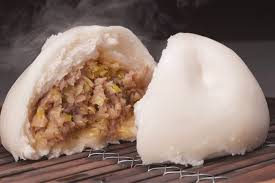
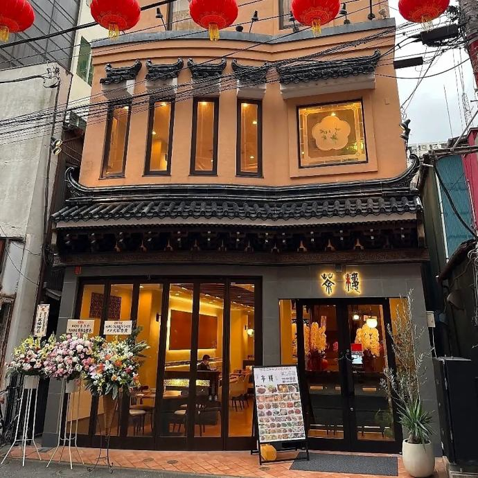
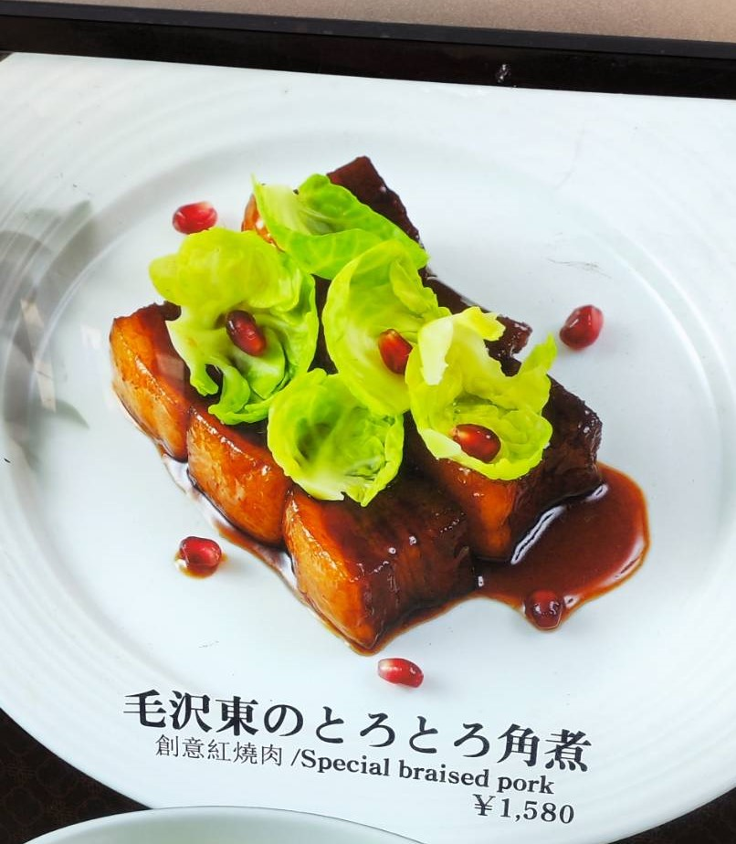
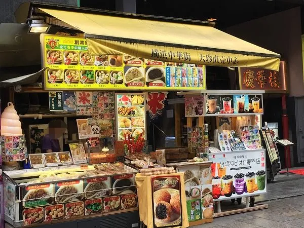
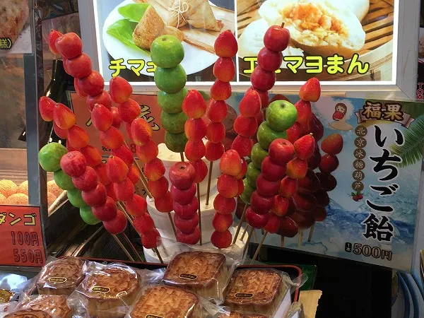

1.江戸清
「江戸清」明治27年に横浜中華街に創業した中華点心や中華総菜、食肉加工品をは販売している名店です。 店頭や通販で購入することができる中華点心や中華総菜といった江戸清ブランド以外にも、BtoB領域とし てハンバーグやとんかつなどの食肉加工品も幅広く販売しています。

江戸清といえば、豚まんが有名です。江戸清の代名詞ともいえる商品で、厳選した国産豚肉、カニ、海老、 野菜をふんだんに使用した餡はとてもジューシーです。しっとりとやわらかく、ほんのり甘い生地は、 塩味ベースの餡ととてもマッチしています。この豚まんは写真で見るよりもかなり大きく、1個の豚まんで250gの重さがあります。 かなりのボリュームに加えかなり熱いので、食べる際にはやけどに注意してください。
2.香港飲茶 皇朝茶楼

横浜中華街で人気の皇朝グループが手掛ける香港飲茶のレストランです。外見は一面ガラス張りで高級感のある外観です。 店内は一転して木目調の落ち着いた雰囲気で、家族連れで訪れるのがおすすめのです。コース料理だけでなくランチメニューや 中華街では数少ない、おかゆや揚げパン、点心などが含まれている中華式モーニングを味わうことができます。

中でもおすすめなのが、角煮です。写真の通りなかなか勘違いを生みそうな名前ですが、毛沢東が愛した角煮される料理という意味が込められています。 毛沢東は豚肉料理が大好きだったといわれており、この角煮もとてもおいしかったです。豚肉はとても柔らかく、癖になる濃い味付けが特徴です。
3.大珍楼本店

大珍楼は1947年に創業したお店で、それ以来ずっと横浜中華街の歴史を重ねています。 創業者が広東地方の出身だということもあり、広東料理がメインのメニューとなっています。 店内は7回まであり食べ放題のフロアや個室、宴会場に売店まであります。特にこのお店では 「オーダー式バイキング」を行っており食べ放題の元祖とも言われる大珍楼でこそ体験してみたいですね。

大珍楼は外にも売店があります。ここでは、食べ歩きにもってこいのフルーツ飴を紹介します。 フルーツ飴は、横浜中華街でもよく見かけると思います。イチゴを丸ごと使い、数も多いためかなりボリュームがあり、満足感がかなり ありました。デザートが食べたいと思ったらぜひ立ち寄ってみてください。